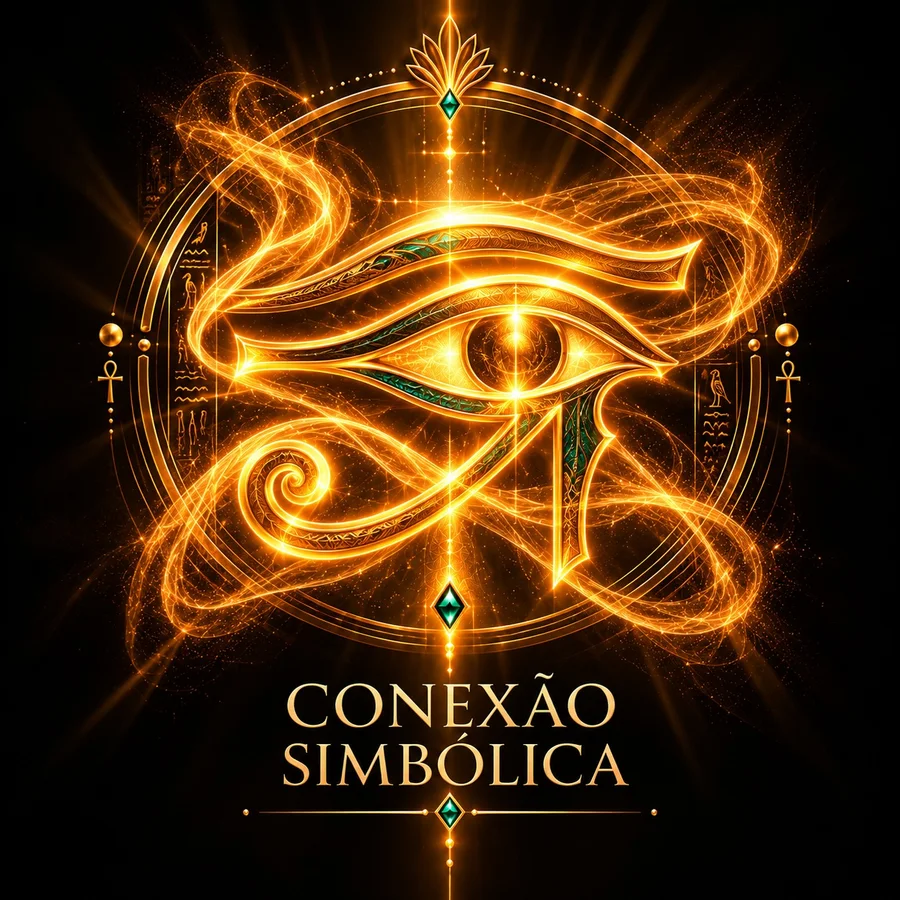
01CONEXÃO SIMBÓLICA
Narrativas e símbolos de poder ajudam você a construir uma relação significativa com as qualidades representadas por Cleópatra.
Descubra uma nova maneira de vivenciar o poder de atração de Cleópatra, através de 7 ativações imersivas que combinam símbolos de poder, imaginação ativa e experiências guiadas para aprofundar sua conexão com o arquétipo.
Uma experiência para mergulhar no fascínio, na sensualidade e na presença magnética de uma rainha.
NÃO APENAS OBSERVE O ARQUÉTIPO. ENTRE NA EXPERIÊNCIA.
QUERO VIVER O PODER DE CLEÓPATRAExiste uma diferença entre ser vista
e ser impossível de ignorar.
Entre chamar atenção
e despertar fascínio.
Entre estar presente
e fazer sua presença ser sentida, mesmo à distância.
Porque o verdadeiro magnetismo não termina quando você vai embora.
Ele também está na lembrança que você deixa, na saudade que pode despertar e na vontade de estar perto de você novamente.
NÃO SE CONTENTE EM SER DESEJADA QUANDO ESTÁ PRESENTE. SEJA UMA MULHER MARCANTE MESMO NA AUSÊNCIA.
A sensualidade de uma sedutora. A mente de uma estrategista. O poder de uma rainha.
...E AINDA ASSIM NÃO ESTABELECER UMA CONEXÃO PROFUNDA COM O QUE ELA REPRESENTA.
Talvez você já tenha colocado imagens arquetípicas no celular, ouvido frequências sonoras ou repetido afirmações esperando sentir algo diferente.
Mas existe uma diferença entre estar exposta à imagem de um arquétipo e estabelecer uma conexão psíquica com ele.
Pense em uma bandeira.
Para alguém que desconhece sua história, ela pode ser apenas um conjunto de cores.
Mas, para quem conhece seu significado e possui uma ligação emocional com tudo o que representa, aquela mesma bandeira pode despertar sentimentos intensos.
O símbolo é o mesmo.
A conexão é que muda.
É por isso que, na proposta do Código do Magnetismo, as imagens e os sons não são utilizados isoladamente.
Eles fazem parte de uma experiência construída para dar significado aos símbolos e envolver profundamente sua imaginação, seus sentidos e suas emoções.
NÃO BASTA CONTEMPLAR O PODER DE CLEÓPATRA. É PRECISO ENTRAR NA EXPERIÊNCIA.
UMA EXPERIÊNCIA QUE VAI ALÉM DE OUVIR ÁUDIOS E REPETIR AFIRMAÇÕES.
Inspirado na psicologia analítica de Carl Gustav Jung, no simbolismo e em práticas de imaginação ativa, o Código do Magnetismo foi desenvolvido para proporcionar uma vivência mais profunda com as qualidades arquetípicas de Cleópatra.
O método reúne três elementos fundamentais:

01Narrativas e símbolos de poder ajudam você a construir uma relação significativa com as qualidades representadas por Cleópatra.
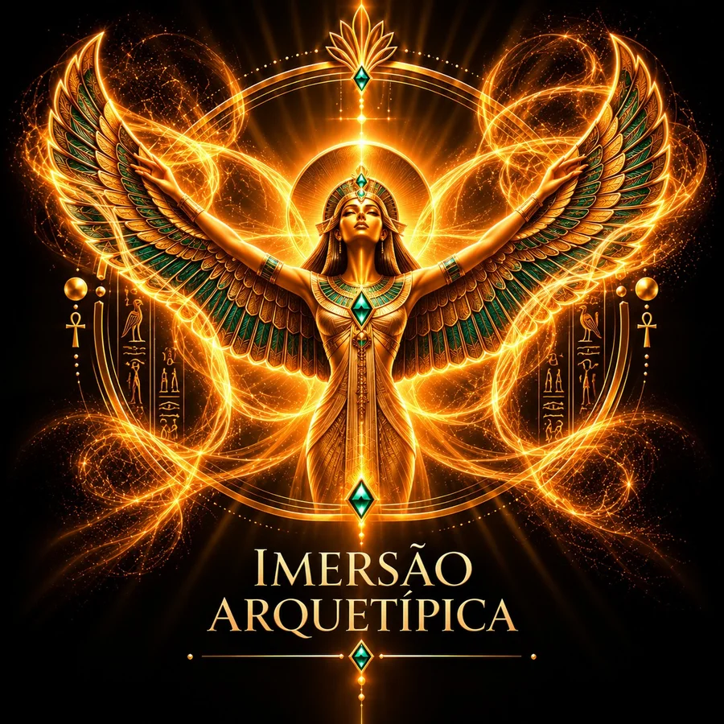
02Você é conduzida a experiências em primeira pessoa, nas quais imagens, sons, imaginação e sensações trabalham em conjunto.
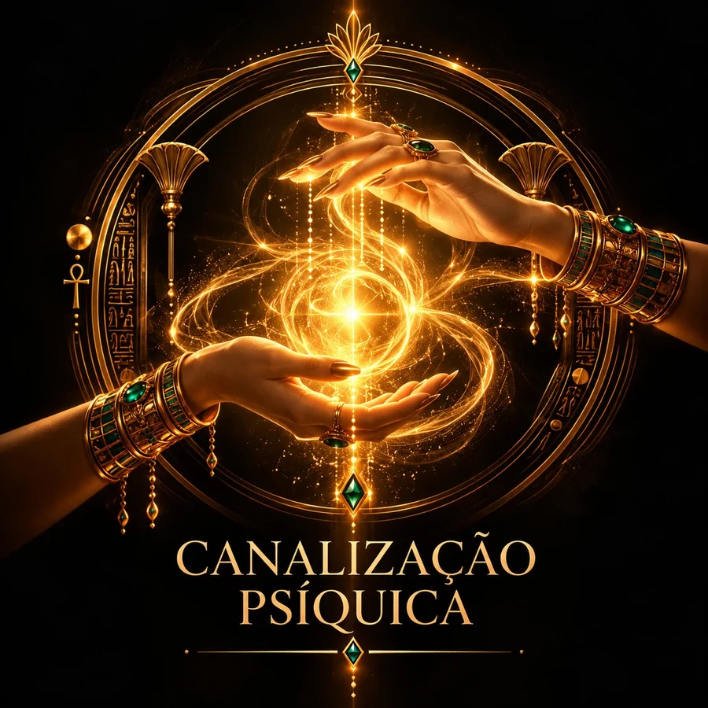
03Dentro da abordagem simbólica do método, as vivências buscam mobilizar a energia psíquica associada ao arquétipo, favorecendo a expressão de suas qualidades no sentir, pensar e agir.
VOCÊ NÃO PRECISA APRENDER A IMITAR CLEÓPATRA.
VIVA UMA EXPERIÊNCIA PARA DESPERTAR O PODER QUE ELA SIMBOLIZA EM VOCÊ.
UMA JORNADA DO ESPELHO DA RAINHA AO TRONO DE CLEÓPATRA.
Cada camada é uma experiência de ativação conduzida para explorar uma dimensão do magnetismo de Cleópatra.
Você não recebe apenas explicações ou exercícios para realizar depois.
A vivência acontece durante a própria ativação.
NÍVEL I
Desperte as bases do seu magnetismo.
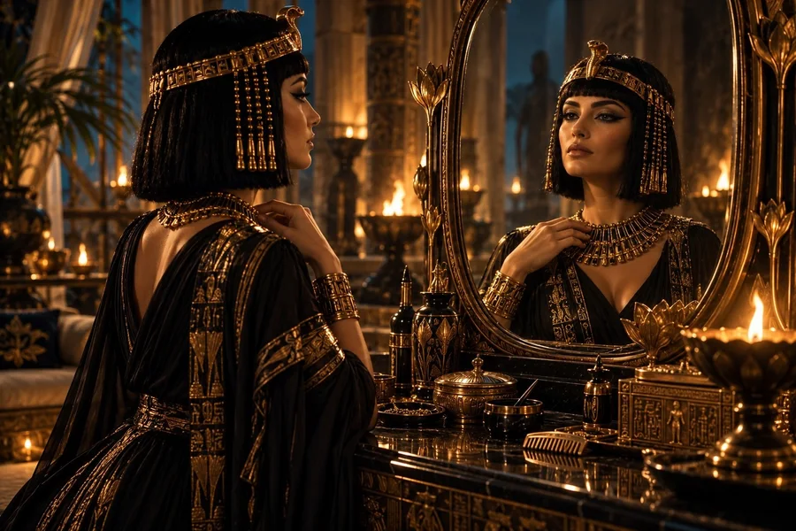
DIA 01Reconheça seu próprio valor.
Uma experiência simbólica para aprofundar sua conexão com a autoestima, a autovalorização e a presença de uma mulher que reconhece sua força.
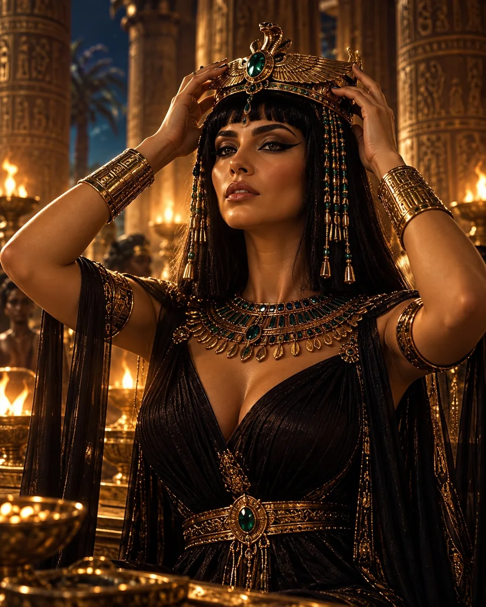
DIA 02Desperte sua permissão para receber.
Uma vivência dedicada à receptividade, ao merecimento e à abertura para o prazer, o reconhecimento e novas possibilidades.
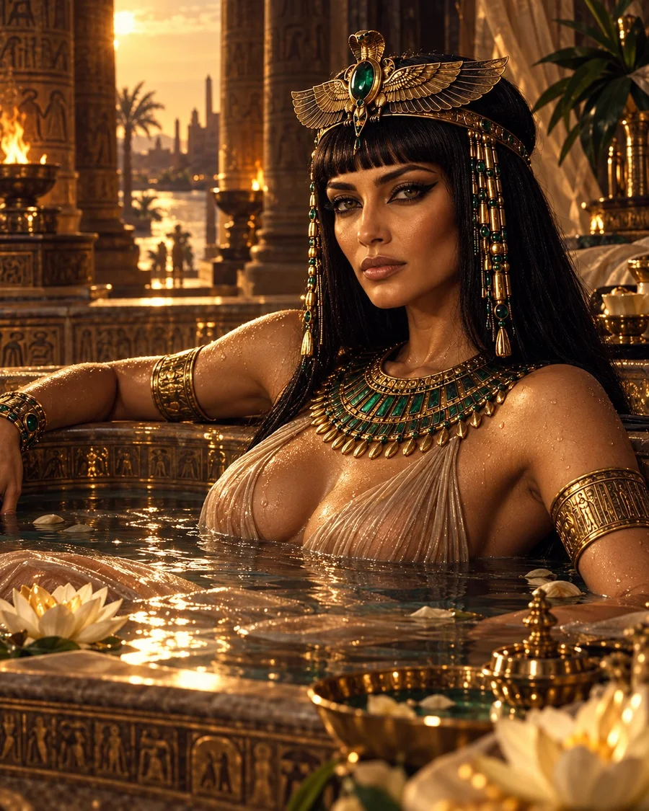
DIA 03Explore o poder da abundância.
Uma imersão nos símbolos de riqueza e prosperidade para trabalhar sua relação interior com oportunidades, conquistas e expansão financeira.
NÍVEL II
Aprenda a direcionar seu poder pessoal.
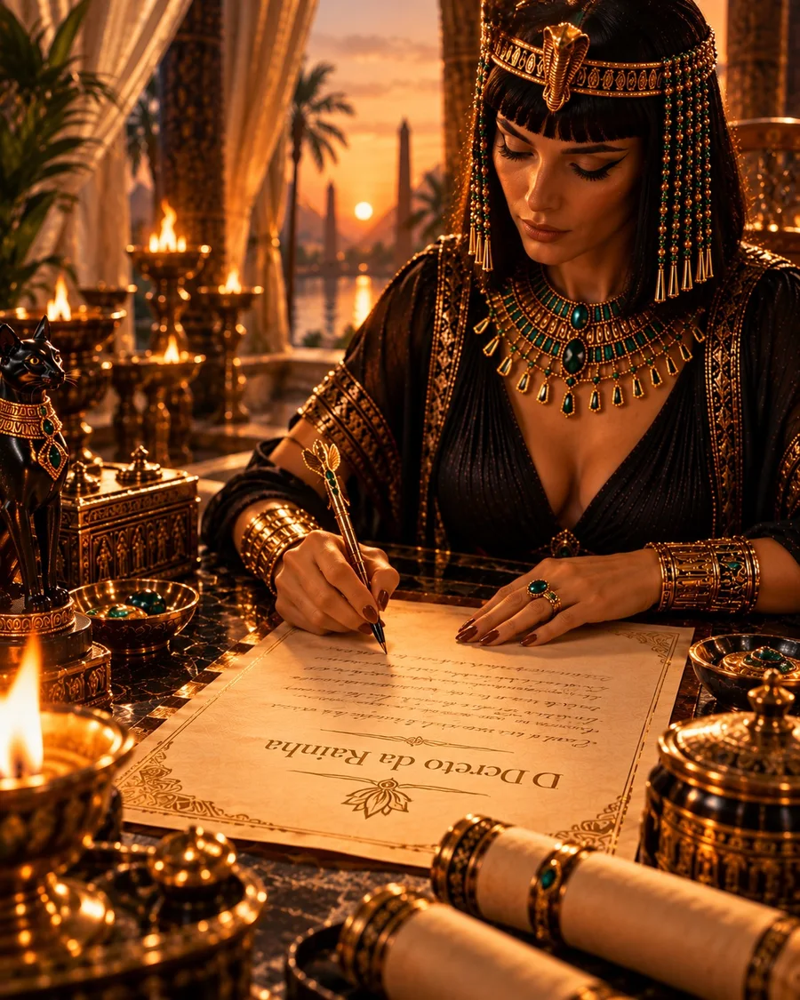
DIA 04Desperte sua estratégia e influência.
Uma experiência de intenção, clareza e poder de decisão, inspirada na inteligência estratégica associada a Cleópatra.
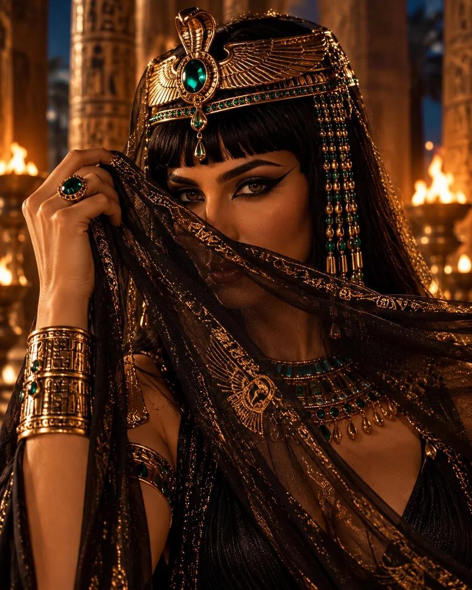
DIA 05Explore seu poder de sedução.
Uma vivência dedicada à sensualidade, ao charme e ao mistério de uma mulher que deseja despertar fascínio e deixar uma impressão inesquecível.
NÍVEL III
Expanda sua presença magnética.
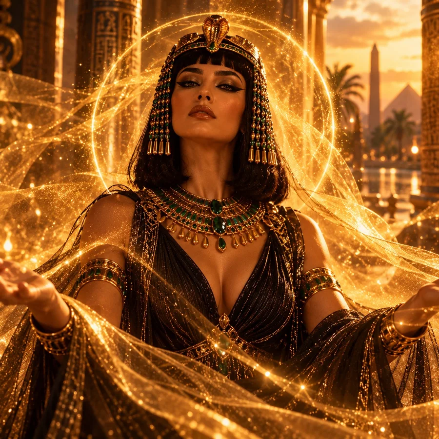
DIA 06Irradie uma presença marcante.
Uma experiência simbólica para explorar a confiança, o magnetismo e a presença de uma mulher que deseja ser lembrada mesmo quando não está por perto.
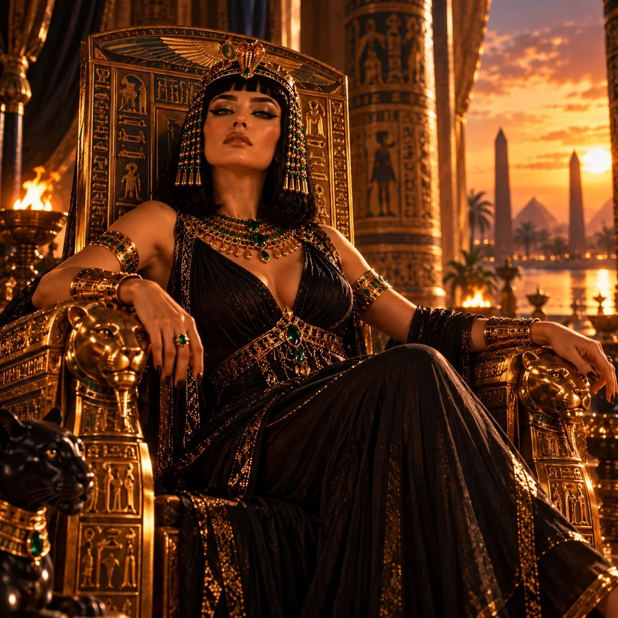
DIA 07Assuma sua soberania.
A experiência final de integração simbólica da sedutora, da estrategista e da rainha.
Um convite para reconhecer sua força, assumir suas escolhas e conduzir o próprio destino.
SETE EXPERIÊNCIAS. UMA JORNADA PARA DESPERTAR DIFERENTES EXPRESSÕES DO SEU PODER.
QUERO ATIVAR AS 7 CAMADAS DO MAGNETISMO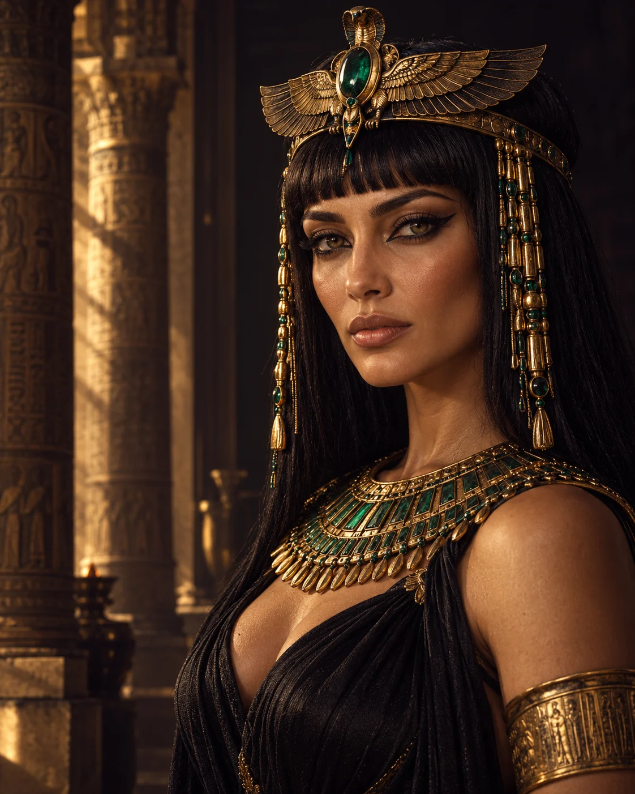
Personagem virtual · Apresentação simbólica e ficcional
ACEITAR O CONVITE DE CLEÓPATRADurante séculos, minha imagem foi associada à sedução, ao fascínio e ao poder.
Mas uma imagem, por si só, não revela toda a força de um símbolo.
É preciso conhecer seu significado. Sentir sua presença. Permitir que ele ganhe vida na sua imaginação.
Agora, eu convido você a percorrer sete experiências.
Sete camadas para explorar o magnetismo, a sensualidade, a estratégia e a soberania que meu nome representa.
Não apenas observe uma rainha.
Entre na experiência.
CONHEÇA UM POUCO DA EXPERIÊNCIA ANTES DE COMEÇAR.
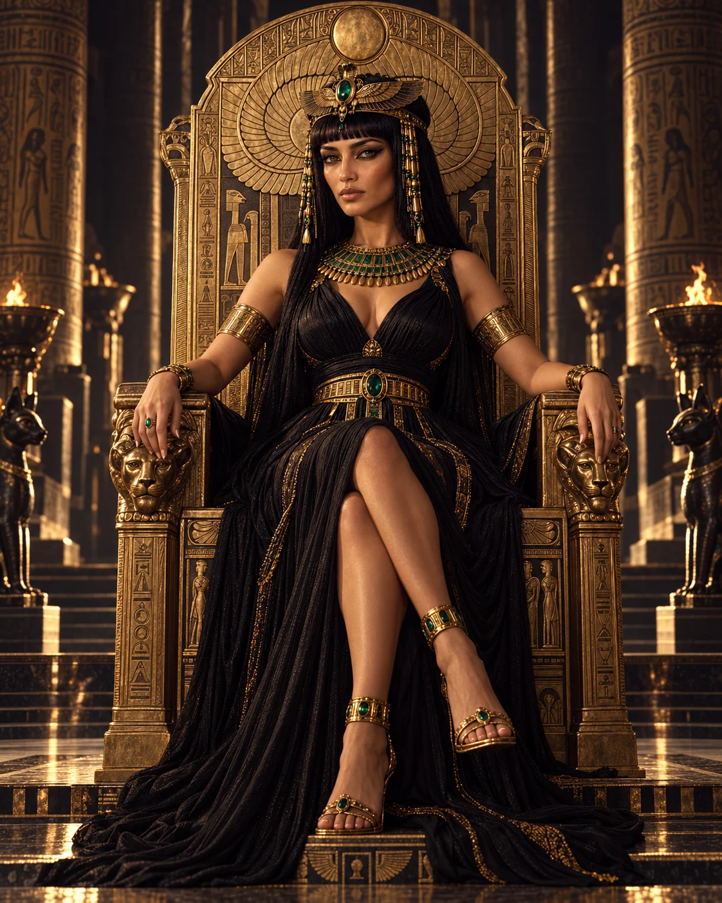
No Código do Magnetismo, símbolos, narrativas, imagens e sons são integrados a vivências conduzidas de imaginação ativa.
Você participa das experiências em primeira pessoa, acompanhando uma condução criada para favorecer envolvimento emocional e conexão simbólica.
Cada camada possui uma intenção específica, mas todas fazem parte de uma mesma jornada.
DO ESPELHO DA RAINHA AO TRONO DE CLEÓPATRA.
Para mulheres que desejam explorar o poder de Cleópatra e:
Já experimentaram áudios, afirmações ou imagens arquetípicas, mas sentiram falta de uma experiência mais profunda.
Querem desenvolver uma relação mais consciente com sua sensualidade, presença e poder de atração.
Desejam fortalecer sua confiança para se posicionar, negociar e aproveitar oportunidades.
Sentem afinidade com simbolismo, arquétipos, imaginação ativa e experiências de desenvolvimento pessoal.
Buscam uma vivência conduzida, em vez de apenas mais conteúdo teórico.
VOCÊ NÃO PRECISA TER EXPERIÊNCIA ANTERIOR COM IMAGINAÇÃO ATIVA.
A jornada inclui uma preparação inicial para orientar sua participação nas ativações.
AS 7 CAMADAS DO MAGNETISMO DE CLEÓPATRA
Sua jornada de Ativação Arquetípica Imersiva.
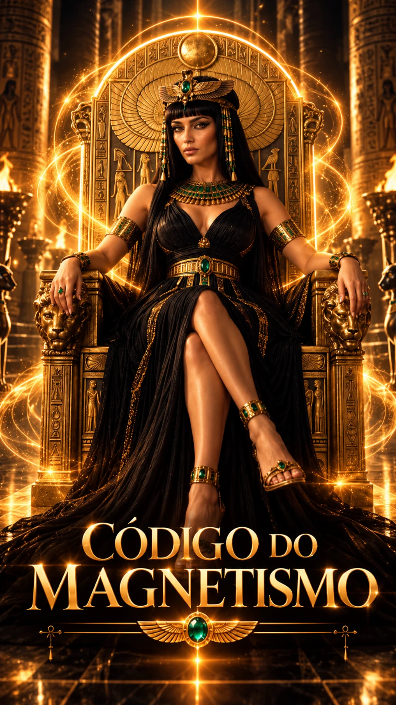
Representação visual do produto digital
Orientações para compreender a proposta, preparar-se para as vivências e aproveitar melhor cada ativação.
Sete protocolos guiados, cada um com sua própria vivência simbólica, integrando narrativa, imagens, sons e imaginação ativa para explorar diferentes dimensões do magnetismo de Cleópatra.
ATIVAR → DIRECIONAR → IRRADIAR
Uma sequência estruturada que parte da valorização pessoal, explora a sedução e a influência e culmina na expressão simbólica da soberania.
Após receber seu acesso, você começa pela preparação inicial e segue pelas sete ativações, organizadas em uma proposta de sete dias.
Reserve um momento tranquilo, acompanhe a condução e participe das vivências de acordo com as orientações de cada etapa.
PRÉ-LANÇAMENTO
As condições de inscrição serão disponibilizadas em breve.
Pré-lançamento · Inscrições ainda não disponíveis.
Não. É uma jornada de sete ativações arquetípicas imersivas, acompanhada de uma preparação inicial. O foco está na experiência guiada, e não em aulas teóricas extensas.
O método integra narrativa, símbolos, imaginação ativa e vivências em primeira pessoa, com uma condução estruturada para aprofundar a conexão simbólica.
Não necessariamente. A imaginação pode envolver sensações, emoções, sons e significados, além de imagens mentais. Cada pessoa possui uma maneira própria de vivenciar a experiência.
Não. A preparação apresenta os conceitos necessários para participar da jornada.
Não. As experiências e os efeitos percebidos são individuais. O método oferece uma experiência simbólica guiada, sem garantir mudanças específicas nos relacionamentos, na vida financeira ou em outras áreas.
Cleópatra representa muito mais do que sensualidade.
Ela reúne a sedutora, a estrategista e a rainha.
E você pode explorar essas dimensões em uma experiência construída para ir além da simples exposição a imagens e afirmações.
NÃO APENAS OBSERVE O ARQUÉTIPO. ENTRE NA EXPERIÊNCIA.
Pré-lançamento · Inscrições ainda não disponíveis.